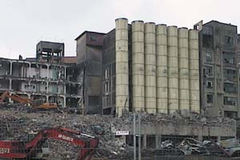

|

|
Ampliar el foro, en una experiencia colectiva de la comunidad virtual.
Enviar imágenes y textos de historias de fábricas de arquitectura industrial
en proceso de destrucción o arquitecturas industriales deshabitadas, con las
que el participante tenga alguna vinculación por vecindad, parentesco,
temática, recuerdos, etc. Para así ampliar y documentar las diferentes
historias. En la exposición se mantendrá un puesto de ordenador abierto al
público para su participación en el que se tratará de que partícipe tanto la
comunidad internacional como la comunidad local, convocando e invitando
previamente a los artistas del lugar que hagan su intervención, que quedará
registrada, para contribuir a la extensión plural del medio.
|